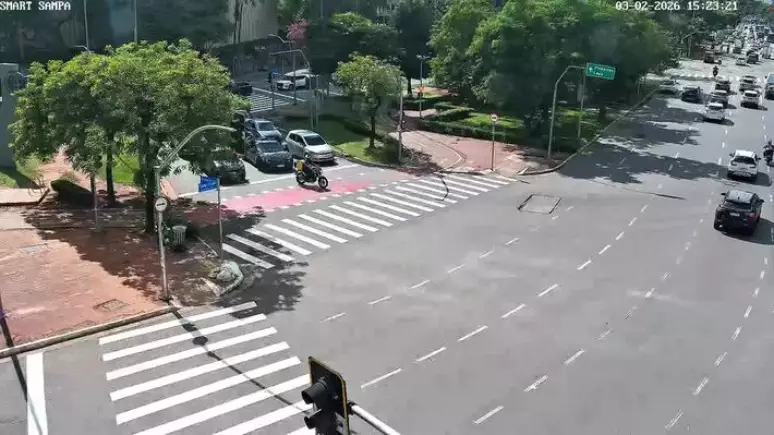

CENÁRIO: CRUZAMENTO FARIA LIMA X JUSCELINO KUBITSCHEK (SP)
Monitoramento Tático: Av. Faria Lima x Av. JK
VEÍCULOS / HORA (ENTRADA)
Gargalo
Crítico:
1.250
Veículos/hora.
ESTADO CRÍTICO (SEM IA)
CICLOS DE ESPERA
5 ciclos de espera

PROTOCOLOS DO CRUZAMENTO
QUALIDADE DO AR
ALERTA OMS
Alerta OMS: Alta retenção de CO₂ em marcha lenta detectada no cruzamento.
FLUXO OTIMIZADO
450 VEÍC/H
Meta IA: Redução para 450 veículos/hora via sincronização adaptativa.
ONDA VERDE JK
STANDBY
Pronto para priorizar fluxo na Juscelino Kubitschek conforme demanda em tempo real.
STATUS DOS SENSORES (F. LIMA)
FL_NORTH_NODE
ONLINE
FL_SOUTH_NODE
ONLINE
JK_WEST_NODE
ONLINE
IA PREDICTIVE ENGINE
Qualidade do Ar: Níveis Normalizados. Fluxo Otimizado: 450 Veículos/hora.
SIMULATED TIME
11:02:51.08
VAZÃO PROJ. (AI)
450 v/h
TEMPO MÁX. ESPERA
45s
AI CONFIDENCE
99.2%